01-壳体与外观件
26 篇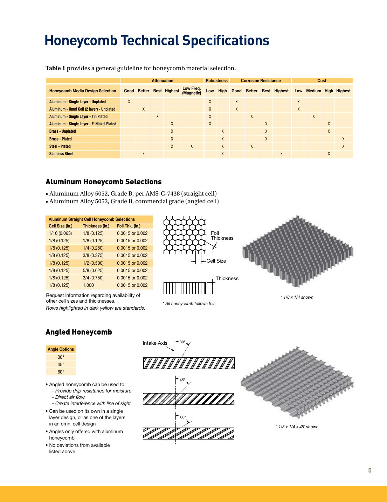
EMI 蜂窝波导通风板：孔径、深度与截止频率

IMD与IML模内装饰：圆角、翻边与浇口避开图案

PS5 免工具侧板与 DualSense 隐藏螺丝

三角筋与角撑（Gusset）：斜撑高侧壁或凸台，而不是再做一面等厚壁

咬花（晒纹）与拔模角：每 0.025 mm 纹深加 1°
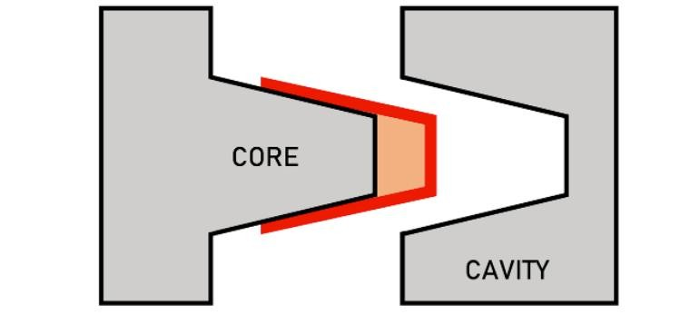
型芯与型腔拔模差：收缩抱紧型芯，让塑件留在动模顶出侧

塑料件加强筋设计：厚度、高度与间距比例

塑料外壳止口与扣位：间隙参数与三个翻车案例
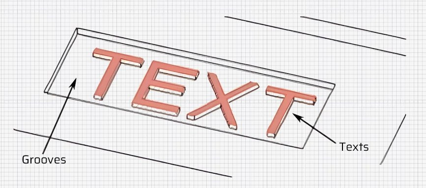
壳体凸字与凹字LOGO：字高、笔画宽和凸凹拔模的差异

外壳散热通风口与防雨百叶：开孔率、进出风与滴水路径
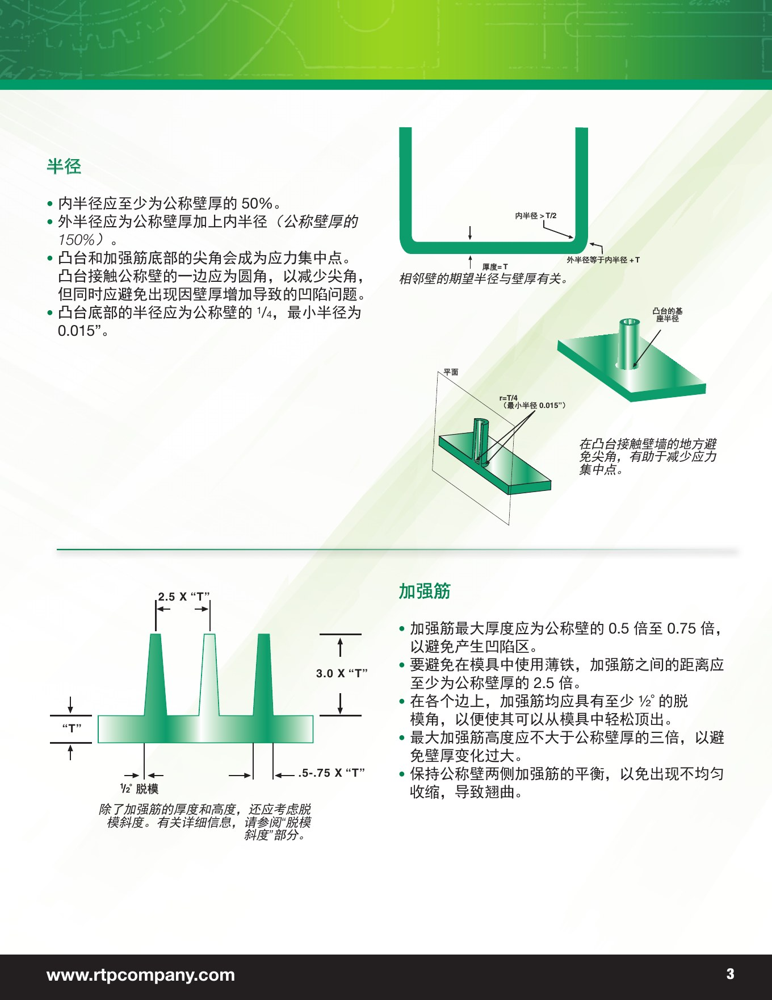
注塑件翘曲：壁厚不均与筋不对称使整件弯向冷却较慢的一侧

注塑内圆角与外圆角：内半径至少 0.5 t、外半径等于内半径加壁厚
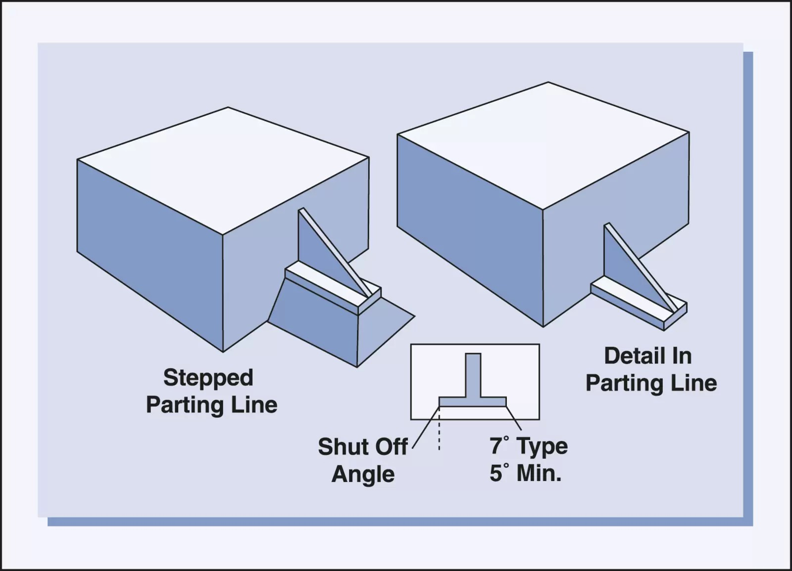
注塑分型面与阶梯封胶斜度：最大轮廓留后模，shut-off 至少 5–7°
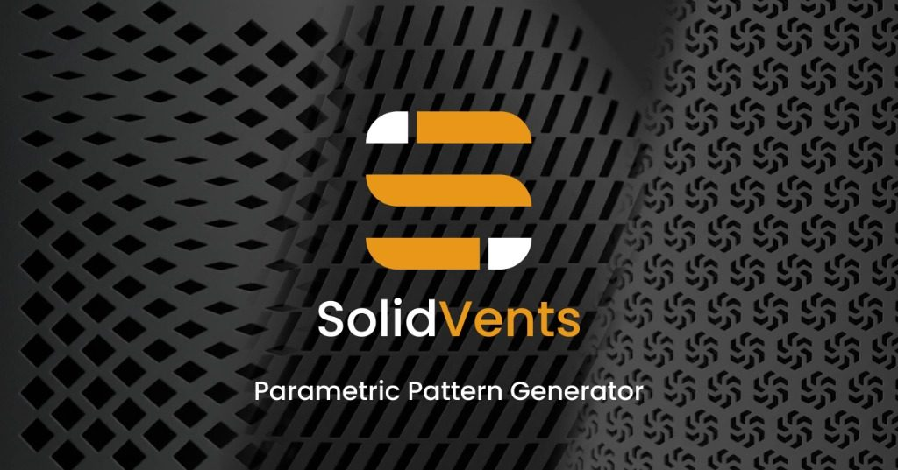
注塑喇叭网罩：开孔率、孔径孔距与脱模
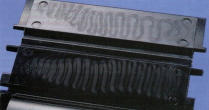
注塑喷射纹（Jetting）：浇口冲入开阔型腔形成蛇形流

注塑困气烧焦与排气槽：最后充填处开浅槽，筋交叉用镶件或排气顶针
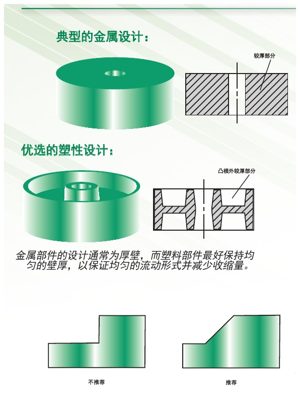
注塑均匀壁厚与厚薄渐变：相邻壁厚比与过渡段长度

注塑浇口类型与位置：侧浇口、潜伏浇口与点浇口对痕迹和对面结构的影响
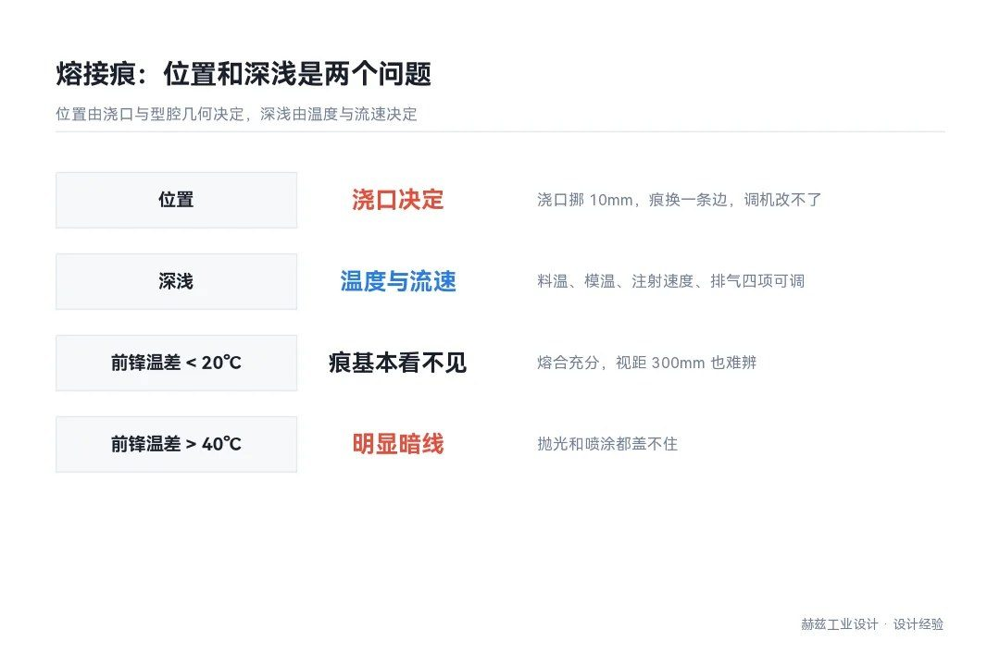
注塑熔接痕：位置由浇口定、深浅由前锋温差定
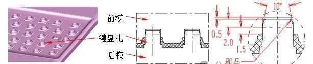
注塑碰穿与插穿：用封胶面成型通孔或侧孔，避免侧抽

注塑缩痕：厚壁背面凹陷、减胶坑与保压边界
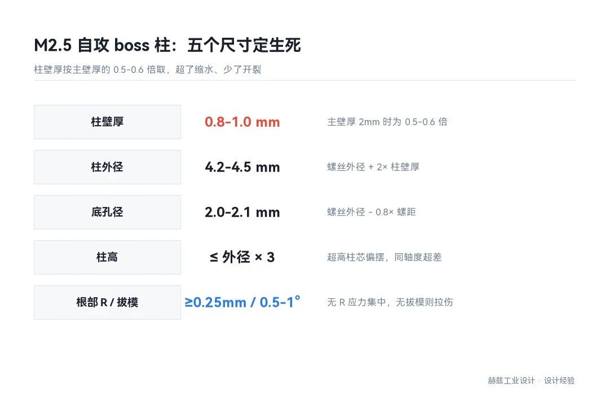
注塑螺丝柱（Boss 柱）：壁厚比 0.6 分水岭与自攻底孔公式
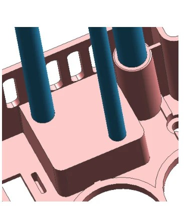
注塑顶针布置与顶白：顶在筋柱刚性区，避开外观面并消除真空吸附
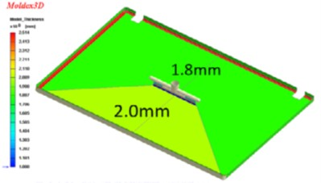
薄壁电子外壳：壁厚区间与流长比 L-t
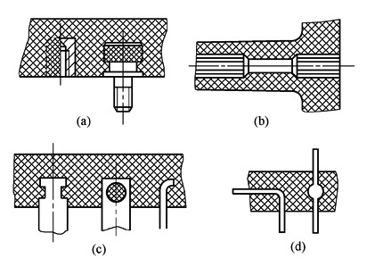
金属嵌件注塑：周围壁厚、滚花止转与开裂风险
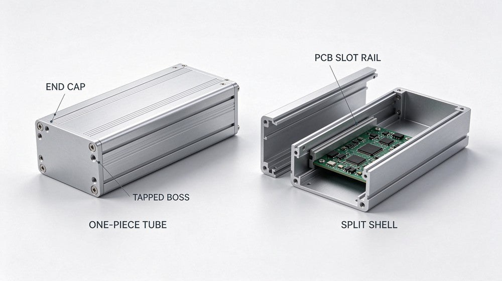
铝合金挤出型材电子设备外壳：一体管、分体壳、PCB导轨槽与端盖密封槽
02-连接与紧固
61 篇
3D 打印件热熔铜螺母：孔径与拉拔力实测

Apple Pencil 2 侧边磁吸充电：线性排列的五颗磁铁与感应线圈

Apple Watch 磁吸充电盘：中心单颗磁铁对位与电感耦合（对照手机环形阵列）

Arca-Swiss 38 mm 燕尾快装板：事实标准与跨品牌混用风险

DIN 导轨卡装模块（IEC 60715 TH35）：卡钩挂住 35 mm 顶帽轨，弹簧卡脚锁紧，拆时拨开卡脚

EJOT Delta PT 塑料用三角齿自攻螺丝：底孔 0.8·d1、20° 牙侧角与应力释放沉孔

FPC 翻盖锁扣连接器：IRISO 三类锁与 Hirose FH12 前翻盖 ZIF
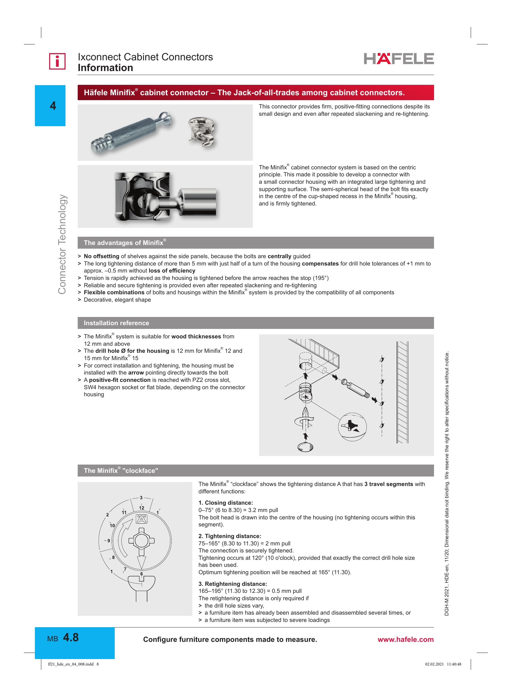
Häfele Minifix 15 柜体连接件：半球头对中拉入杯形凹槽（对照 Hettich Rastex）
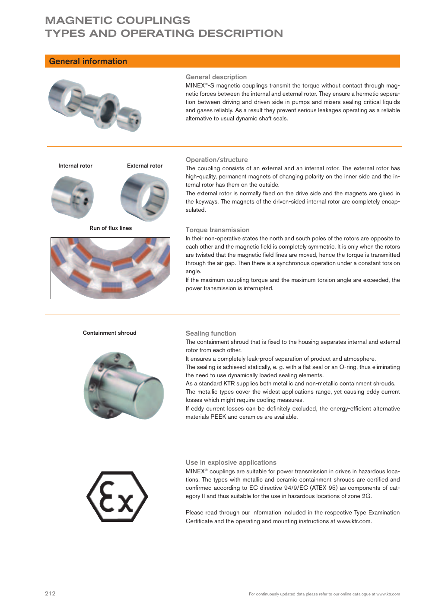
KTR MINEX-S 磁力联轴器：隔离套两侧磁转子无接触传扭

MagSafe 1-2 笔记本磁吸充电头：磁力保持触点对中，拉力过大时整头脱落
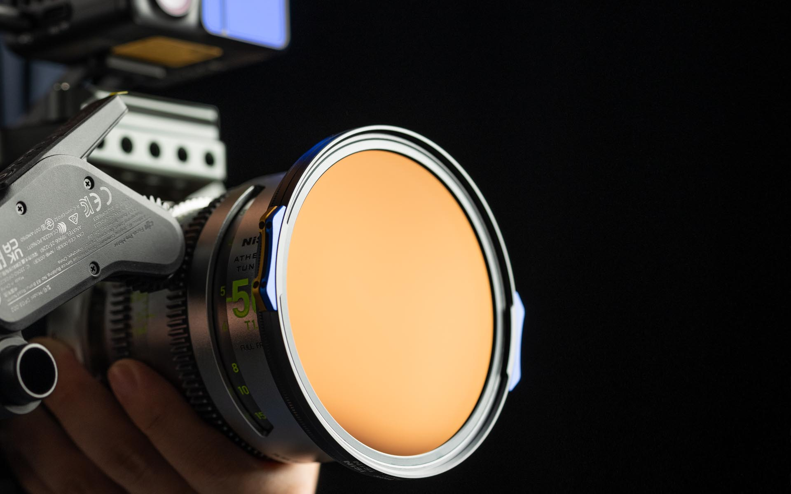
NiSi JetMag Pro：转接环磁吸滤镜叠放与小手柄旋转锁定

Nord-Lock 楔形防松垫圈：楔角大于螺纹升角的成对拉伸锁紧

PEM 与 Southco 防脱落面板螺丝：拧松后留在盖上，HP EliteBook 845 G8 五颗底盖钉

Pogo Pin 弹簧顶针：针头、弹簧与针管的工作行程和弹力

SODIMM 双侧释放卡扣：斜插入槽后下压锁止（对照焊接 LPDDR）
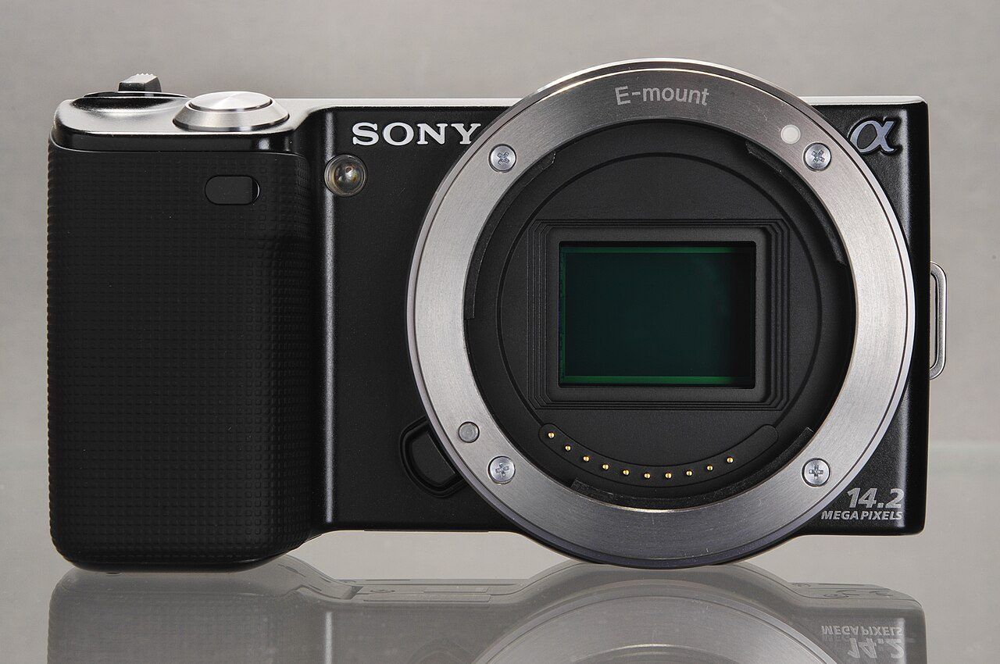
Sony E 卡口：三爪、18 mm 法兰距与锁销磨损

Southco、DZUS 四分之一转快锁：90° 凸轮与按总材料厚度选钉长

Spiralock 楔形底 30° 防松内螺纹：牙顶楔入斜面消除径向间隙

TAPTITE II 金属三角挤牙自攻螺丝：按啮合率选底孔
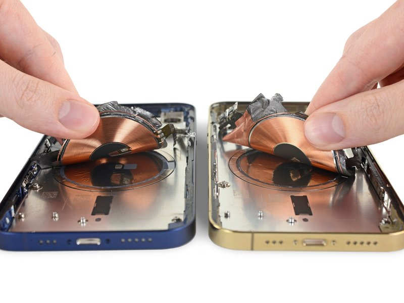
iPhone MagSafe 环形磁铁阵列：18 颗磁铁把线圈对中并对附件保持

任天堂 Switch 2 Joy-Con 2 磁吸连接

任天堂 Switch Joy-Con 滑轨连接
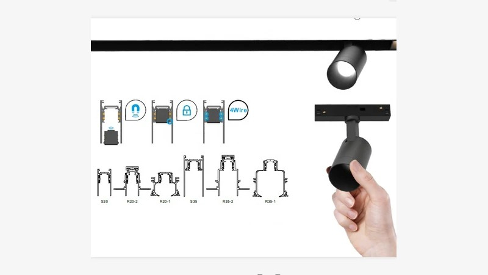
低压磁吸轨道灯：导轨内永磁吸附与铜轨针脚取电

储能焊螺柱（GB/T 902.3 PT/IT）：电容放电把焊接端熔到板面

全金属锁紧螺母（DIN 980）：三点变形与金属嵌片的预紧力矩防松

凸焊螺母：在薄板上投影焊接螺纹，对照压铆螺母与攻丝
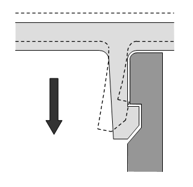
卡扣三种基本形式：悬臂、环形、扭转

台阶螺丝（ISO 7379 塞打螺丝）：光杆定位、螺纹只锁紧

吸顶灯磁吸安装座：预装固定板或铁座与灯体磁铁对吸，并可加防坠绳（对照低压磁吸轨道灯）

塑料件超声波焊接：导熔线、焊筋与溢胶槽
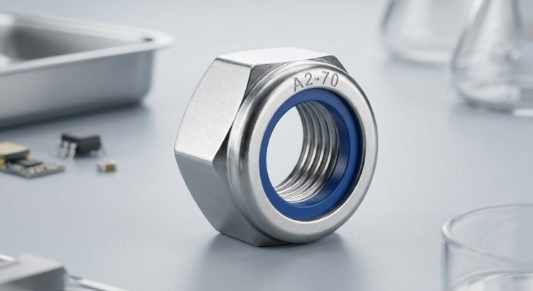
尼龙嵌件锁紧螺母（DIN 985 Nyloc）：预紧力矩、120°C 上限与安装方向
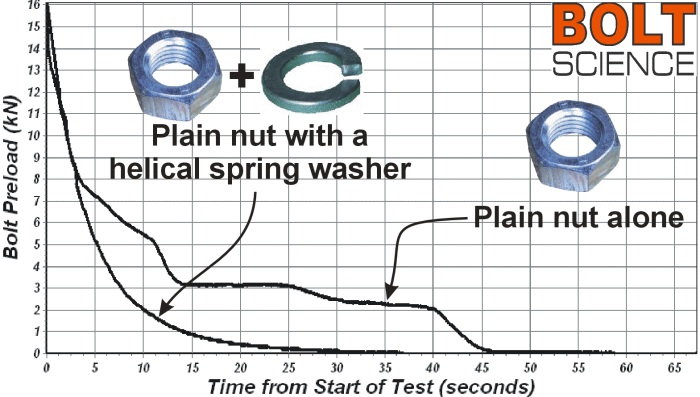
开口弹簧垫圈防松失效（反面案例）：压平后在横向振动中几乎无效
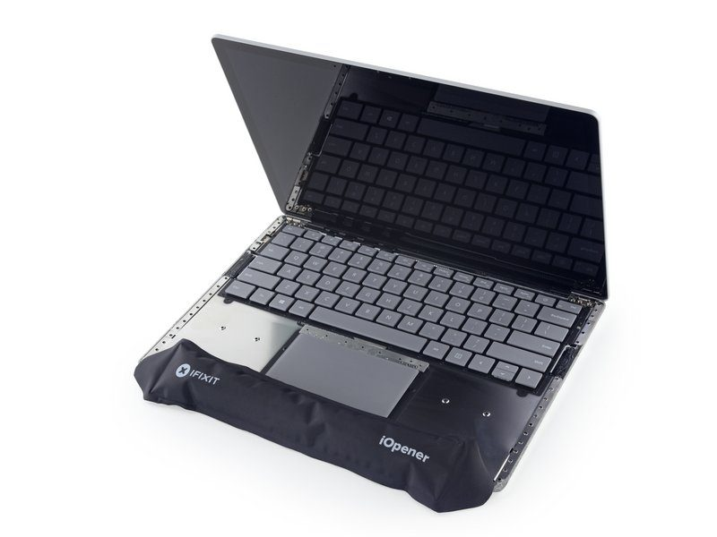
微软 Surface Laptop 超声波点焊与 Alcantara 覆面（反面案例）

抽芯铆钉（盲铆钉）：钉套、钉芯与断颈槽，开口型与封闭型

拉铆螺母（铆螺母）：单面镦头、铆接范围与圆孔滚花及六角防转
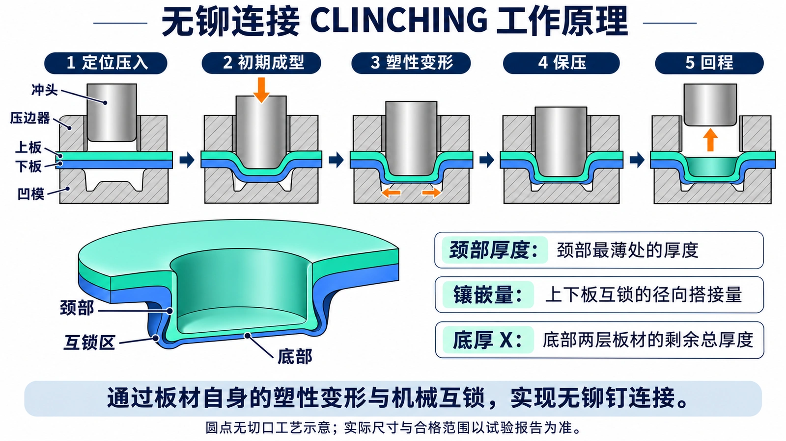
无铆连接（Clinching、TOX）：冲头与凹模把两层板挤压成机械互锁
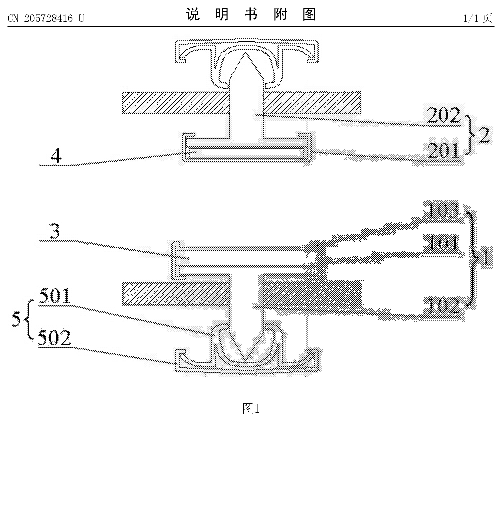
服装箱包磁四合扣：公母壳包住永磁体对吸，凸环或凹腔抗剪而无机械锁死
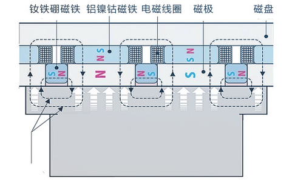
机床电永磁吸盘：脉冲充磁后停电仍保持夹紧
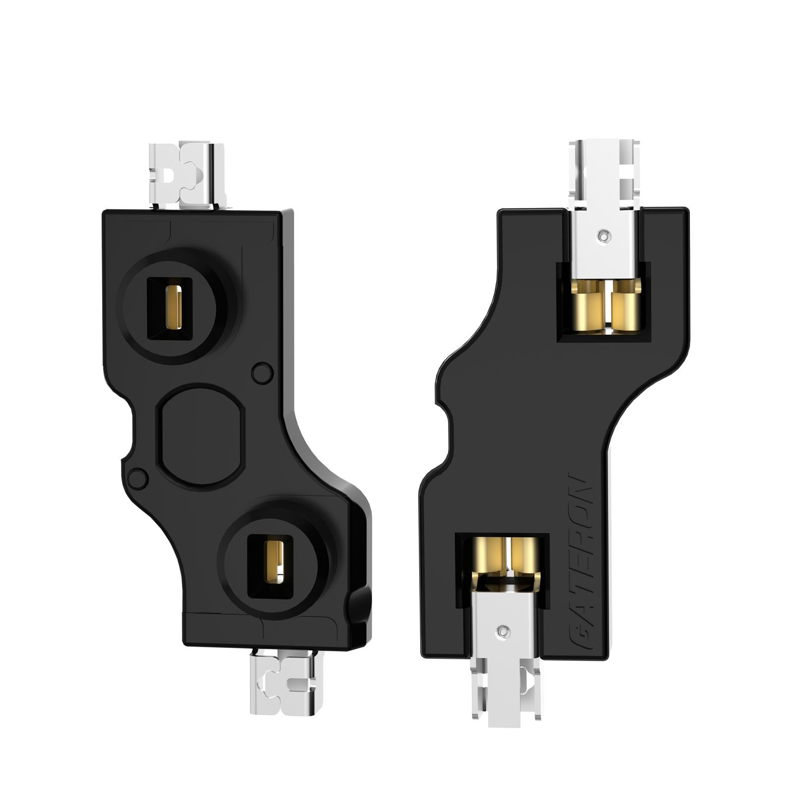
机械键盘热插拔轴座：PCB 插座夹住轴针脚，换轴不必焊接（对照 Cherry MX 轴内部）

橡胶膨胀螺母（Well nut）：橡胶套筒胀紧孔壁兼隔振

橱柜磁吸门吸：只有磁力保持、没有机械锁死（对照 FIDLOCK）
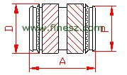
注塑模内预埋铜螺母：模具定位、溢胶风险与直纹及斜花滚花
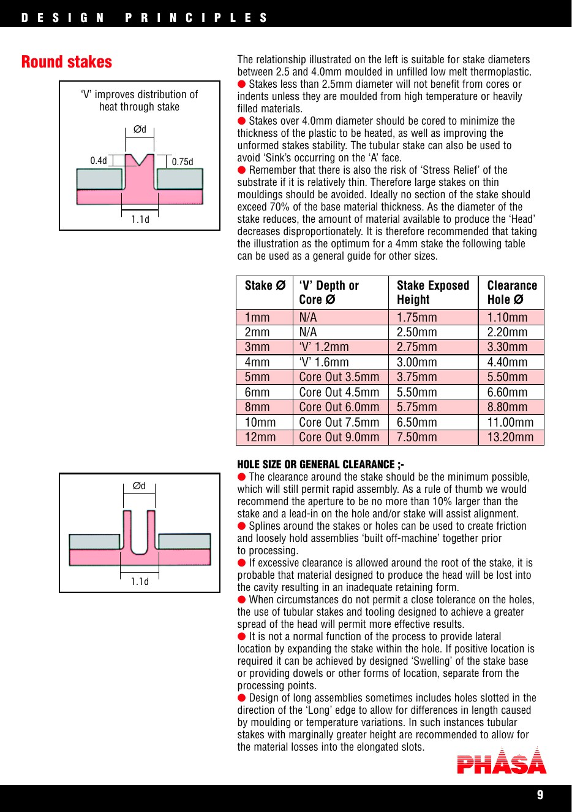
热铆柱几何：实心柱不超过3mm、空心壁厚0.75–2.0mm，被铆孔径按柱径1.1倍

热铆（热熔柱）：铆柱高度按体积守恒算，蘑菇头直径 2d
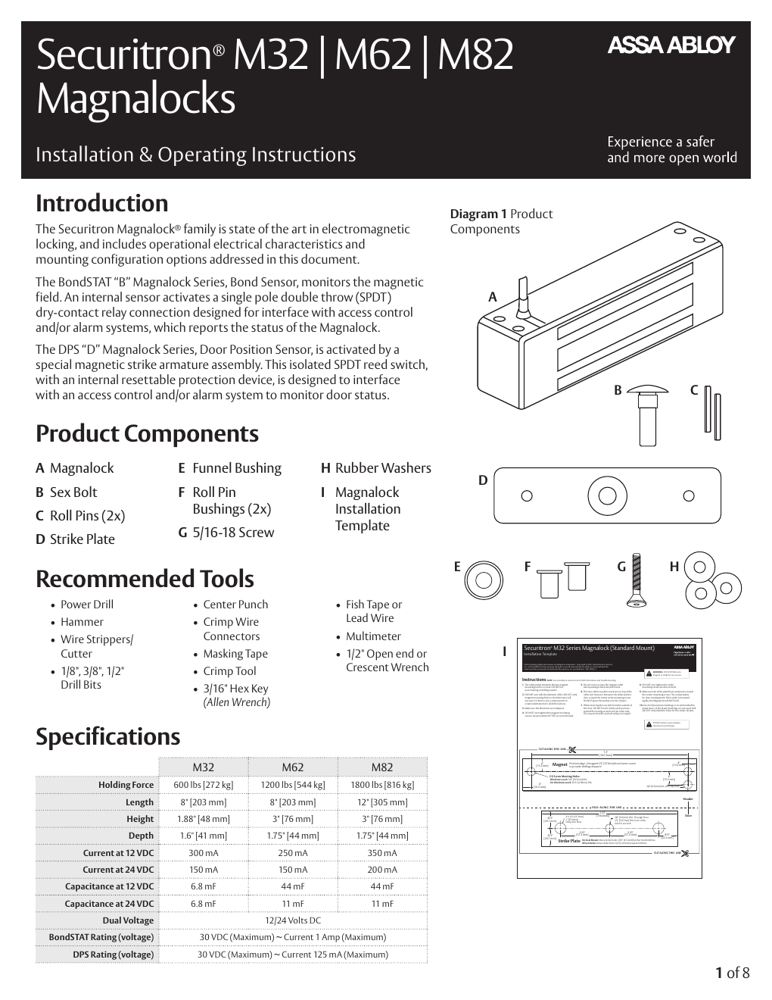
电磁门锁（磁力锁）：通电线圈吸合衔铁，断电释放

电缆防水格兰头：PG 螺纹、夹紧爪与密封圈
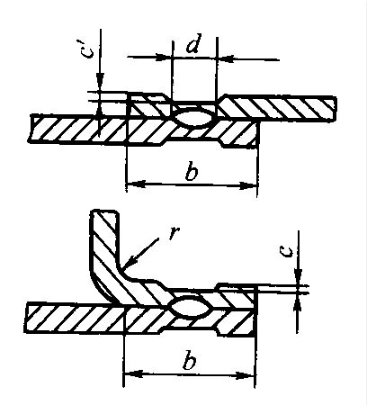
电阻点焊：按薄件厚度选熔核直径、搭边宽度与最小点距
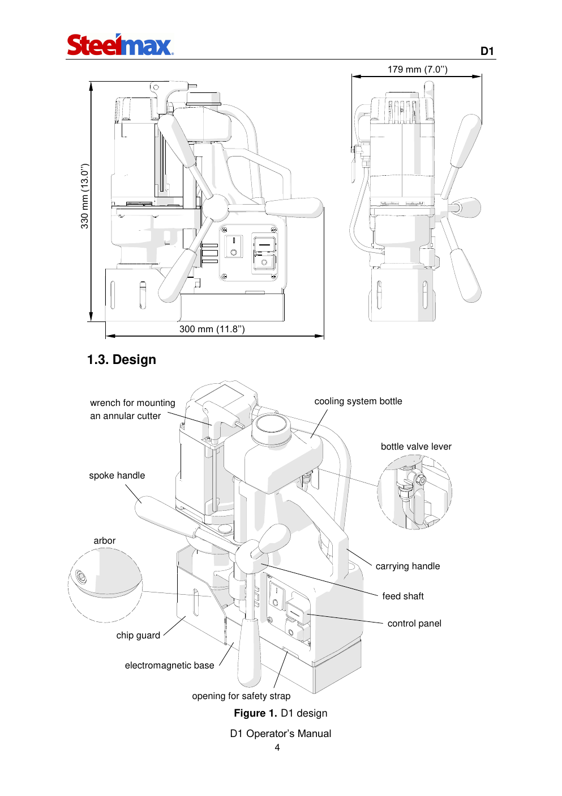
磁力钻座：电磁底座把钻机吸在钢板上再钻孔

磁吸充电线接头：钢壳与环形磁铁对中，弹簧顶针导电，定位耳防误接

膜片（膜盘）式弹性联轴器：扭矩走膜片平面，两半轴毂夹住金属膜片组来补偿不对中
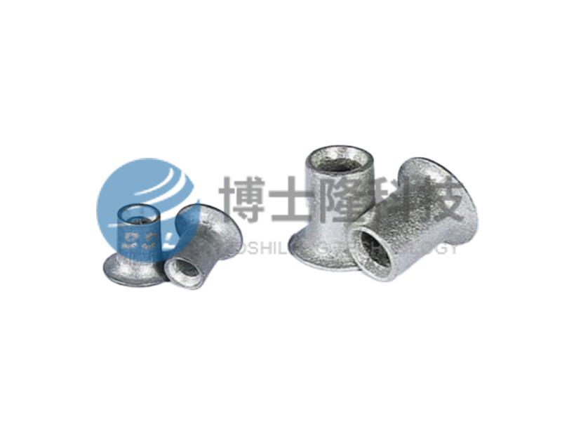
自冲铆（SPR）：半空心铆钉刺入上层并在下层张开互锁，不必预冲孔

苹果 AirTag 旋转后盖与内部卡扣

螺旋切口弹性联轴器（Helical beam coupling）：圆棒上切连续螺旋槽，一体梁弯曲补偿轴偏差

钢丝螺套（Helicoil 与 STI 底孔）：菱形钢丝嵌件与专用底孔攻丝

钣金 U 型夹板螺母与卡式笼式螺母：板边夹持与方孔浮动螺纹

钣金压铆螺母（PEM S/CLS）：孔径、最小板厚、边距与板材硬度上限

钣金压铆螺钉（PEM FH 平头螺柱）：孔径、最小板厚、边距与板材硬度上限

钣金压铆隔离柱（PEM SO）：孔径、最小板厚、柱长与板材硬度上限
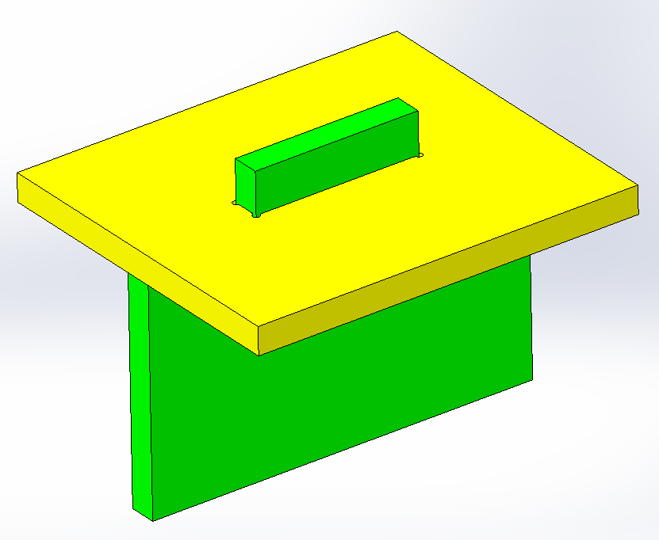
钣金插舌与槽（Tab and Slot）：自定位拼装并避开尖角应力集中

预涂微胶囊螺纹胶与现场涂厌氧锁固剂（precote 与 Loctite 243）
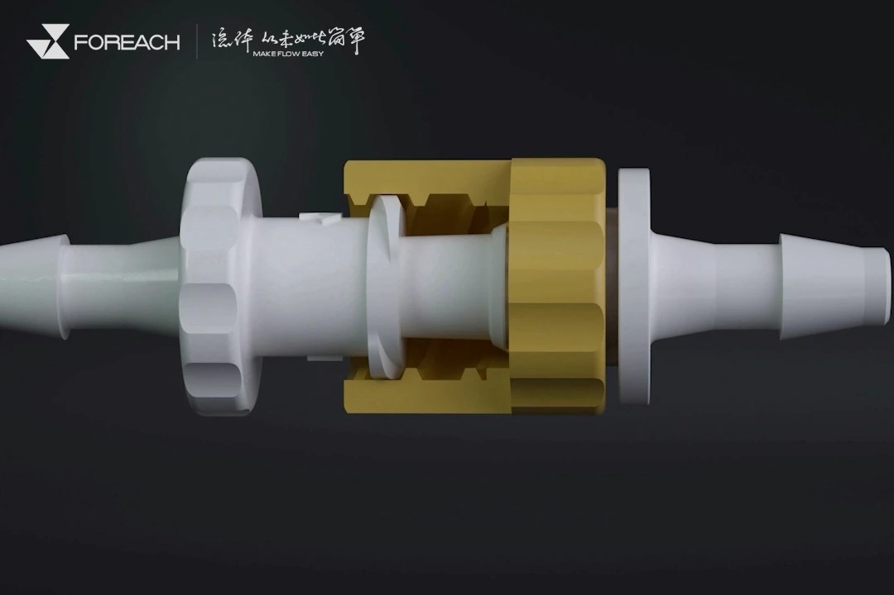
鲁尔锁定接头：6% 锥面负责密封，螺纹与锁耳只负责保持
03-转轴与铰链
17 篇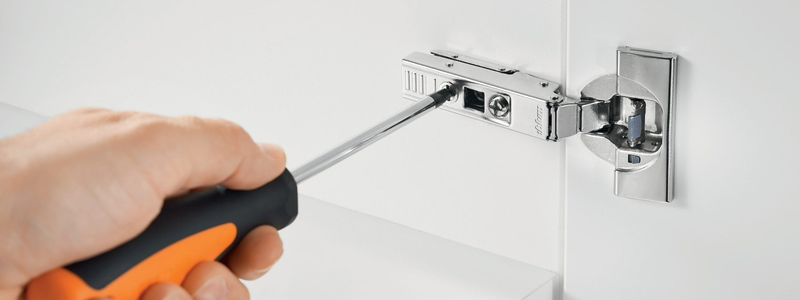
Blum CLIP top BLUMOTION 杯型铰链：35 mm 杯孔、免工具卡底板与杯内集成阻尼

VESA MIS-D 75-100 接口与倾角摩擦关节

iMac 27 英寸铰链弹簧塑料帽失效（反面案例）

iPad Magic Keyboard 双铰链悬浮支架与配重

三星 Galaxy Fold 一代铰链与屏幕支撑结构

三星 Galaxy Z Flip 铰链与尼龙防尘刷

十字交叉簧片枢轴（Cross-spring pivot）：交叉位置对寄生位移的影响与 C-Flex I-10 实例

卡特轮柔性铰链（Cartwheel flexure）：中心交叉梁转动副，对照切口短铰与十字簧片
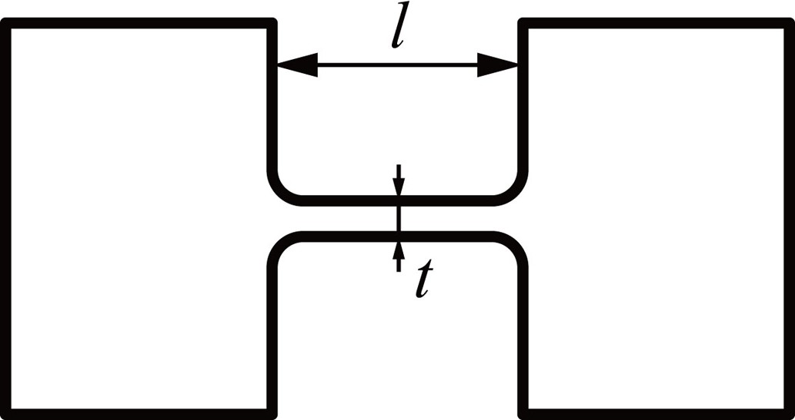
圆角直梁柔性铰链（Corner-filleted flexure hinge）：等厚直梁加两端圆角 r，对照直圆切口铰
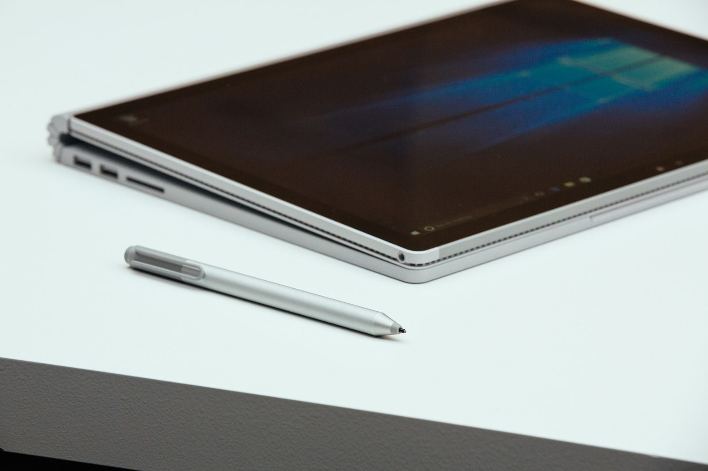
微软 Surface Book 动态支点铰链（分段铝铰链）

微软 Surface Duo 360° 双铰链

微软 Surface Pro Kickstand 宽角摩擦铰链

恒扭力摩擦铰链：卡簧过盈产生扭力与「最低扭力 > 盖板力矩」选型
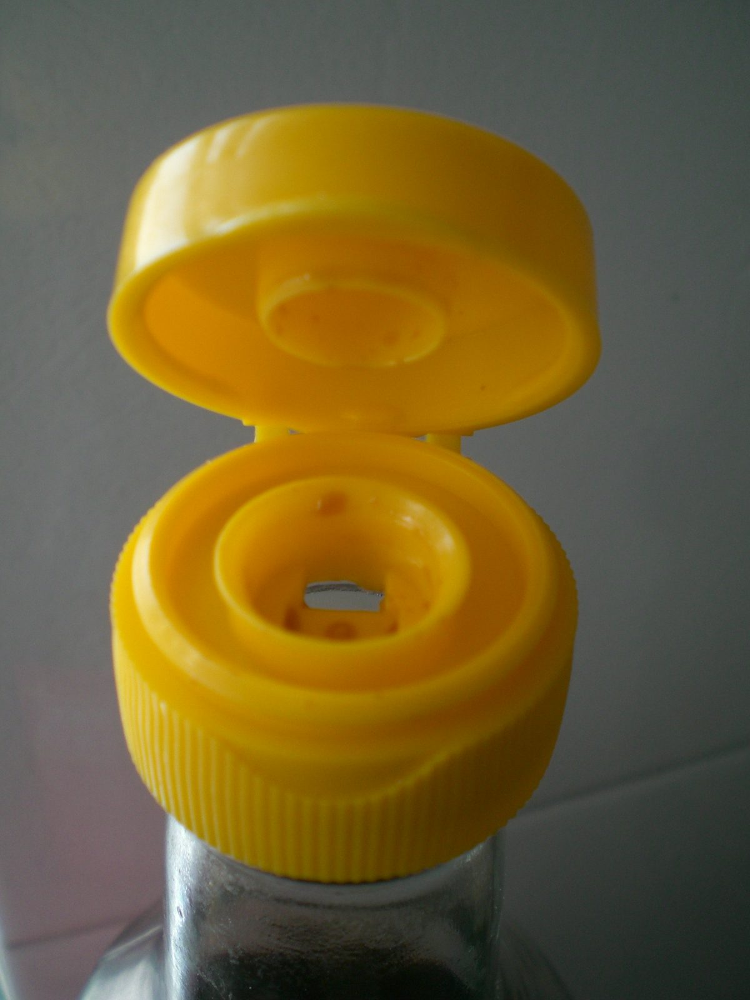
活动铰链（Living Hinge）：一体成型的柔性铰链
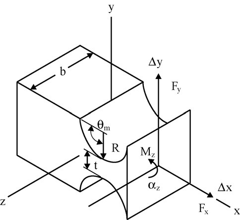
直圆切口柔性铰链（Right circular flexure hinge）：最薄处厚度 t、切口半径 R 与公式适用范围

系带式连体瓶盖（Tethered cap）：防丢系带或模压桥把盖留在瓶口，并用开启后的停留几何区别于短薄膜活铰

苹果 MacBook Pro 2016 Flexgate（反面案例）：绕板的屏幕排线与 2018 年加长 2 mm
04-机构与运动
95 篇
16 英寸 MacBook Pro 剪刀脚键盘：1 mm 键程与交叉支架（对照蝶式）

ALPS EC11 旋转编码器：11 mm 金属轴增量脉冲与可选按压开关
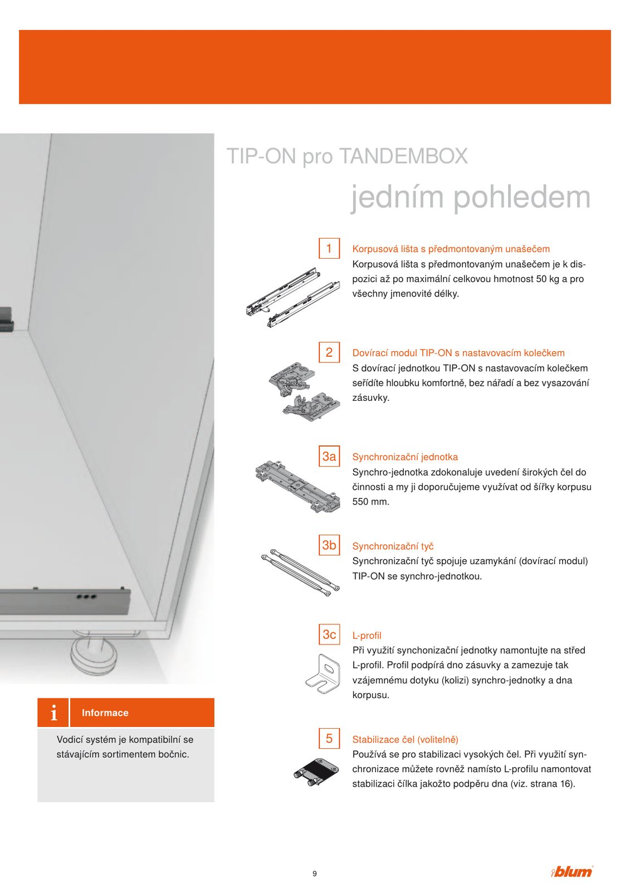
Blum TIP-ON 按压弹开抽屉：柜体轨弹簧单元与抽屉锁止模块

Cherry MX 机械键盘轴：轴心、螺旋弹簧与金交叉触点

DIP 滑动拨码开关：挡块推动 V 形滑块，使一对镀金固定触点接通或断开

DualSense 自适应扳机：电机+蜗杆的力反馈机构

Ergotron CF 恒力螺旋弹簧支架（对比气弹簧）

FIDLOCK SNAP：圆形磁吸按扣侧向滑开（对照 V-BUCKLE 上掀）
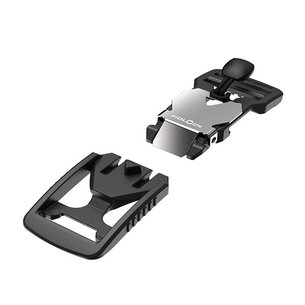
FIDLOCK V-BUCKLE：磁吸引导到位后再由机械扣锁死
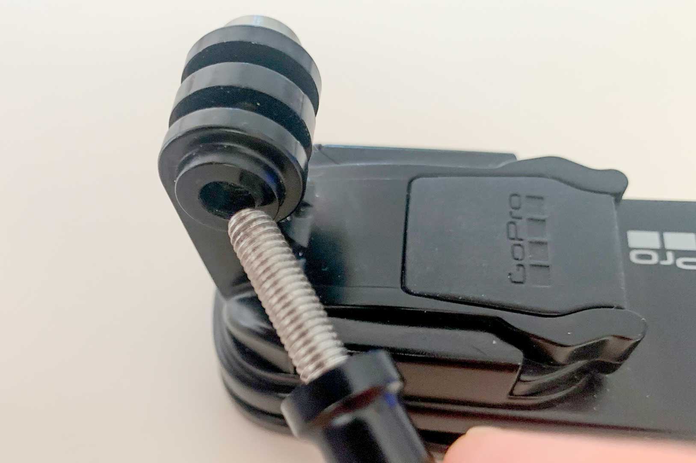
GoPro 快拆卡扣与指旋螺母：两爪弹性卡入和螺钉夹紧是两套锁

IBM Beam Spring键：片簧越中反转并向上提起飞板
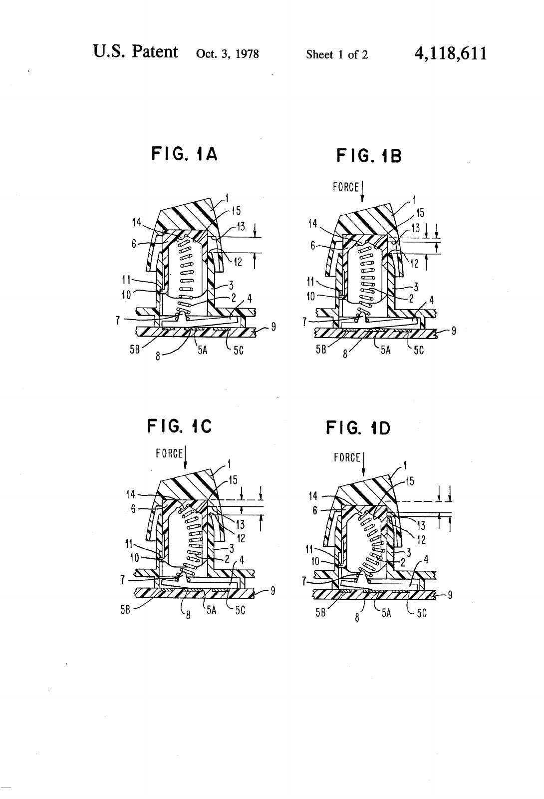
IBM屈曲弹簧键：螺旋簧失稳产生力矩，驱动翻转锤
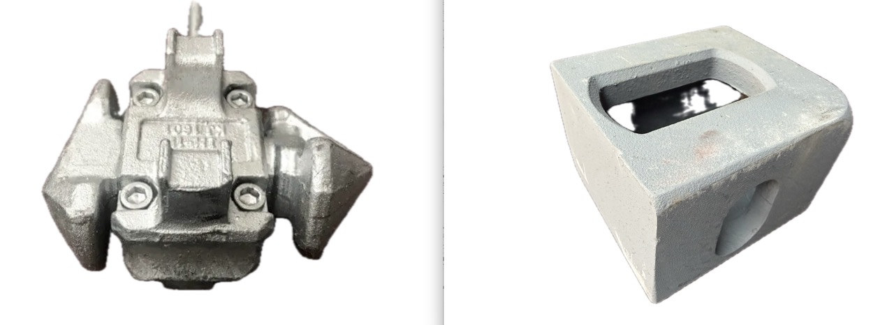
ISO 集装箱角件扭锁：锁头插入椭圆孔后旋转约 90° 卡住

Insta360 磁吸快拆配件 2.0：磁铁对中后由滑动锁承力

KSD301 突跳式温控器：蝶形双金属片到位后瞬间切换触点

Mac Pro 2019 旋转把手外壳锁与免工具模块锁

Nano-SIM 针顶出托盘（Pin-eject）：外部顶针把客户自制托盘顶出
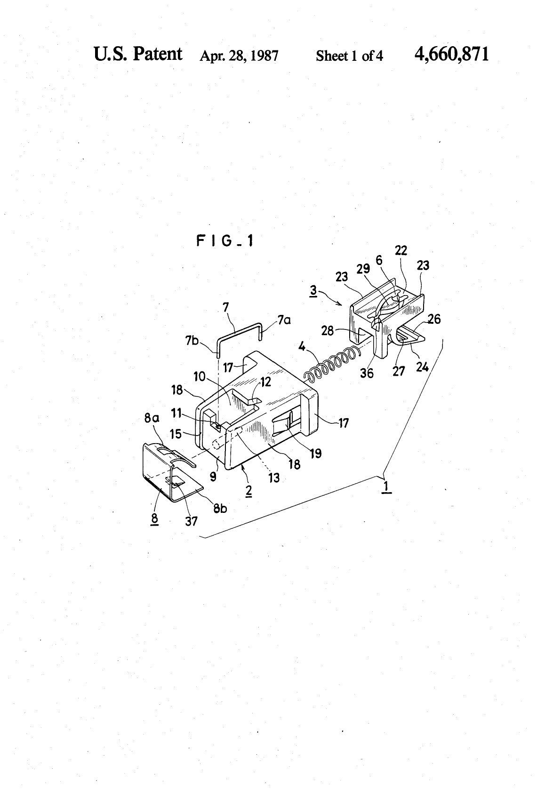
Nifco 经典心形槽 Push-Push：U 形销与片簧（对照 ITW 防变形版）

PCB功率继电器：线圈吸合衔铁带动触点，线圈与触点高压隔离（以 Omron G2R 为例）

Peak Design SlimLink：方形陶瓷凹槽磁吸预定位与弹簧卡舌硬锁
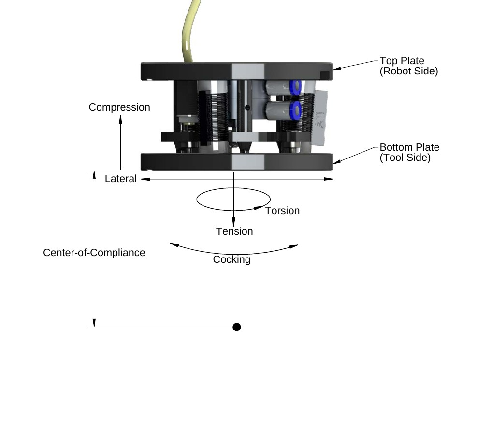
RCC 远程柔顺手腕：把柔顺中心配置到装配孔口附近实现倒角自动对中
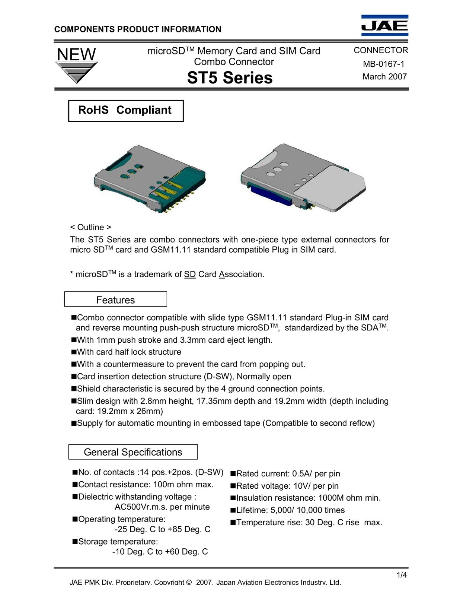
SD 与 microSD 推推式卡座：心形槽滑块与卡片当撞销

YETI MagSlider 杯盖磁吸滑盖：滑块与盖内磁铁夹持，开闭两端保持

三位置使能握持键：松手OFF、轻握ON、过握OFF且回程不再导通

侧向释放插扣（ITW SR 1）：双弹性卡臂、母座侧窗与中间翼
儿童安全瓶盖压旋锁：外盖与内芯齿平时不啮合，按下后啮合再旋转
单动式球头快卸销：按按钮收钢珠，松手后钢珠弹出锁紧

博世 FlexiClick 机头快换：插入夹持座后转动锁环至咔哒，轴向拉出约 5 mm 转到 16 个位置

压电驱动桥式柔性铰链位移放大机构：理想放大比与铰链柔度造成的折减

双稳态柔顺机构：完全柔性屈曲梁与Young型跳转的几何稳态
商品柔性导向微位移台：无摩擦柔顺结构导向，行程与分辨率来自弹性导轨而不是滚动导轨

复合材料带簧双稳态：开口圆柱壳在伸直与盘卷构型间跳转

安全门舌片联锁：专用执行器转动内凸轮，以直接断开动作打开 NC 触点

层合弹出扭转铰（LET Joint）：薄板窄梁扭转提供面外转动
工业限位开关：在微动开关外面加防护壳和滚轮杠杆等致动器
带拉环弹簧分度销：弹簧保持插入，拉出后转 90° 停在槽上
平行板簧直线导轨与双平行四边形：对称构型抵消寄生横向位移
平行梁式称重传感器弹性体：双孔平行梁把载荷变成孔壁最薄处的弯曲应变，并用修锉调整四角误差

应变式指点杆：十字薄片根部弯曲，将侧向按力变成二维输入

弹出式地面插座：按压锁条解锁后面板弹起（对照 TIP-ON 与心形槽）

微波炉门三联联锁：第一、第二联锁断开供电，监控开关在门开时短接熔断保护

微软 Surface Book 形状记忆合金（肌肉线）电控分离锁

急停蘑菇头：机械保持、刻意复位与触点脱落向安全侧断开

恒力柔顺机构：半圆波纹正刚度梁与双稳态负刚度梁并联抵消

手机侧键传力结构：键帽、软胶导电基与壳体间隙链
手柄十字键：中央半球支点与四向弹性触点的倾转选择
手表折叠扣与蝴蝶扣：双按或掀盖释放，表带折叠后由卡舌锁住

拇指摇杆万向导向：正交转动框与中央弹簧回中

按动圆珠笔：旋转凸轮的按压伸缩机构

接触辅助十字簧片柔性铰（CAFP）：接触缩短簧片自由长度以改变单向刚度
旋转BCD编码开关：编码转子把档位编成4位代码（对照 Nidec SC 与 Omron A6A）
旋转凸轮开关：每一级最多两个触点，由凸轮按档位独立通断

旋转阻尼器（缓降盖板）：硅油黏性、水平型与垂直型的扭矩曲线
显示器气弹簧支架：张力螺丝与悬停平衡
机械式膜片与活塞压力开关：预紧弹簧设定动作点并触发微动开关
机械快门线：柔性芯与固定外套的反力闭环，远置按钮不传手部晃动
柜用凸轮转舌锁：钥匙带动锁舌转过门框挡边（不是板式偏心轮）

橱柜弹簧碰珠（Hager、Brusso）：弹簧把钢珠顶入锁片凹坑

气动快插接头（SMC KQ2 一类）：卡爪咬管、密封圈密封，按解锁套后拔出
气动远置按钮：压缩气腔、软管与隔离的电气开关
气弹簧内部结构：活塞阻尼孔与氮气预压
汽车安全带带扣：锁钩卡入锁舌孔，按钮解锁后顶出弹簧弹出锁舌

汽车引擎盖双级锁：主锁棘轮棘爪与二次安全钩，必须两次操作才能全开
液压平面阀快速接头（ISO 16028）：双向截止阀与套筒钢球锁，区别于气管快插
滚珠倾斜开关：导电滚珠在重力下滚离凹槽，与导电凸点接触导通

灶具旋钮轴向解锁：先推或拉解除转动约束，阀芯压紧与解锁分工

热磁脱扣断路器：双金属片过载延时、电磁铁短路瞬时，经自由脱扣机构分断触头

电动工具电池包：滑轨插入与按压锁舌（得伟拆解）
电柜三点连杆锁：一点把手驱动上下连杆把柜门多点锁在框上
电柜压缩式门锁（Southco E3 与 EMKA 1022）：先转舌再轴向压缩密封条

相机两段按键：上下金属动触点与分级力行程，不把两路电信号当两级手感
硅胶导电按键：斜壁荷重、碳粒与排气槽

磁浮子液位开关：浮子内磁铁与管内簧管磁耦合
翻盖式按键防误触：铰链、自动回盖弹簧与独立按钮
联排按钮共享闩条：按新键释放旧键，互锁不自动等于禁止双按

脚踏开关：后铰轴踏板、独立防护罩与多级操作边界

膜盒与焊接膜片波纹管：波纹膜片成对对焊，形成可轴向伸缩的密封弹性盒
自行车花鼓快拆杆：空心轴、调节螺母与偏心凸轮过中心夹紧

苹果蝶式键盘（反面案例）：变薄 40% 的代价与硅胶防尘膜补救

薄膜开关叠层：面板、间隔层、电路层与开窗排气
跷板开关的弹簧柱塞：滑动压点、摇动触桥与中位自定心

轻触开关壳体封装金属弹片：盖板、推杆与锅仔片反转导通（以 Omron B3F 为例）

过中心拉伸搭扣（Southco 97）：杠杆过死点自锁，把箱盖拉向箱体

金属压电按钮：连续金属面微挠曲，无可见滑动键程的扩展案例
金属波纹管轴向补偿器（膨胀节）：单式波纹管吸收管道轴向热位移，刚度由单波刚度除以波数得到
金属锅仔片阵列：直径、力值、行程与寿命互换

钮子拨杆开关：手柄过中后压缩弹簧把动触点快速切换到另一侧静触点

键盘内胆Gasket悬置：把按键触底载荷从刚性螺柱改经弹性垫传到壳体

长键卫星轴：双滑块与弯钢丝同步，偏心按压不再单端下沉

防变形静音 Push-Push 按压弹跳锁（ITW 专利 EP1596030）
飞行箱嵌入式蝴蝶锁：旋转翼板 180° 钩住保持器（对照直线拉扣）

鳍条效应自适应夹指：Festo DHAS 斜肋梯形桁架包络抓取
鼠标分体主键预压：独立键板、金属枢轴与弹簧张紧

鼠标微动开关（Omron D2FC）：杠杆、簧片翻转与触点

鼠标滚轮编码器：机械触点码盘与光栅遮光两种取信号方式
05-密封与防护
14 篇GORE 防水透气膜：压力平衡与粘贴式透气阀的安装参数

Garmin fēnix 7X 可复用橡胶密封圈

GoPro Hero4 Session 免外壳防水机身
O 形圈密封槽设计：填充率、压缩率与挤出间隙的五个数
TPU 包胶气囊角：拐角外凸空腔缓冲跌落冲击

三星 Galaxy Z Fold3 折叠屏防水结构
三防手机整机防水结构：上下壳胶圈、电池盖、按键与开孔的参数清单
冰箱门磁封条：挤出胶套内嵌磁条闭环吸合，兼作闭合与密封（对照橱柜门吸）

喇叭防尘网与防水透声膜叠层：声学孔与结构孔不要混用
安全帽 EPS 与 EPP 缓冲内衬：珠粒模压与硬壳堆叠
手表防水推杆：套管导向、轴向回位与径向滑动密封
淋浴房对开门磁吸密封条：两扇门边磁条互吸并兼密封（对照冰箱门封）
苹果 iPhone 7 首代 IP67：逐个开口封堵与气压平衡阀
跌落测试结构加固：六面四角、外圆角与局部 TPU 缓冲
06-拆解与可维修
23 篇3D 打印磁吸弹簧钢构建板：热床磁吸固定，取下弯曲脱件（对照橱柜磁吸门吸）

Fairphone 5 卡扣后盖与免胶可换电池

Fairphone 6 螺丝模块化（屏、电池、摄像头、USB-C）
Framework Desktop 免工具面板与标准件模块化

Framework Laptop 16 Expansion Bay 滑出式显卡模块

Framework 笔记本模块化扩展卡与磁吸边框
HMD Skyline 螺杆凸轮顶开后盖与塑料衬膜取电池
ThinkPad T480 整张键盘作为可选服务 CRU：两颗螺丝滑出后拔排线

Valve Steam Deck OLED 可维修改版：金属螺纹柱、T6 Torx 与电池撬卡槽

博世 PowerTube 可抽电池：钥匙锁与安全托两级保持，轴向型沿导轨插入并由安全钩钩住
喷墨用户可更换维护箱：抽换定位、端子禁触与盖板锁紧
德龙全自动咖啡机可拆冲煮器：侧门抽出、彩色释放钮与 PUSH 锁紧
戴森 V11 集尘筒红色释放钮与可拆滤网：按下后尘筒沿滑轨下滑并打开底座，滤网逆时针旋出

拉伸释放电池胶：沿长度方向拉出颈缩失粘，避免弯折电芯

服务器免工具机柜滑轨：方孔卡入导轨与解锁拉片后整机抽出

热插拔服务器电源：释放闩锁加手柄抽出、盲插连接器对接

热插拔硬盘托架：前手柄锁止、托盘滑入并把接口盲插到背板

热插拔风扇模块：快拆手柄或凸轮把手与运行中更换
琢美 Dremel 4000 碳刷窗：两侧旋下刷盖，弹簧把碳刷压向换向器，不必拆电机

苹果 AirPods Pro 全胶粘封装（反面案例）

苹果 iPhone 14 双面可开：中框承力与前后两道密封

苹果 iPhone 16 电解脱粘电池胶

鼓粉分离：感光鼓与碳粉仓分件更换（对照传统鼓粉一体）
07-材料与工艺
30 篇FDM 一体打印活动件（Print-in-Place）：XY 每边 0.3 mm、Z 两整层的间隙规则
MuCell微发泡：气泡生长代替保压，筋壁比可以做到1比1

免喷涂材料 vs 喷涂：成本、良率与三条硬边界
压铸侧抽芯：侧孔或倒扣不能沿主开模方向退出时才加滑块

压铸内浇口与横浇道：先定位置和截面积，再保证横浇道向内浇口收缩

压铸壳体：壁厚、拔模与加强筋设计规则
压铸螺纹嵌件：先旋入镶套再以弹珠限位，防止铝液进牙（嵌中嵌）

压铸铸孔与自攻底孔：细针易断，小于2mm宜先导后再加工
压铸铸态螺纹：外螺纹用对开牙或螺纹环，内螺纹芯需带轴向斜度
双色注塑：硬胶先射、软胶后射的结构拆件规则
发泡件缩水：模温、排气与保压和实心件相反

换料收缩率：同一张图换料就裂，图纸必须按新缩水放缩

气体辅助注塑（GAIM）：用气道掏空厚筋消缩痕
注塑倒扣脱模：强脱、斜顶还是滑块

特斯拉 Giga Press 一体化压铸车身件

真空压铸：合模后抽出型腔气体，再在负压下充型以减少卷气

真空吸塑与压力成型外壳：拔模、圆角与拉伸减薄

荣耀金属 3D 打印免组装转轴专利：连接余料与垂直打印方向的切割面

薄板抽孔翻边攻牙：预冲孔翻起后再攻内螺纹（对照压铆螺母）

金属注射成型（MIM）：均匀壁厚、烧结支撑面与 5000 件成本拐点
钣金K因子与展开长度：中性层位置决定下料尺寸
钣金冲压百叶窗：先切开再顶起仍连在板上的通风罩
钣金卷边（Hemming）：把板边折回自身，做成封闭、开口、泪滴或绳状包边

钣金压筋（加强肋）：半圆筋与梯形筋用板料起伏补刚度
钣金折弯件设计规则：最小弯曲半径与预留切口

钣金折弯回弹：先稳定工艺窗口再做角度补偿
钣金拉深：拉深比、压边力与起皱拉裂

钣金曲线翻边：伸展翻边拉裂与压缩翻边起皱

铝件阳极氧化的尺寸链：膜厚一半向外、遮蔽螺纹与挂点
风管 Pittsburgh 锁扣咬口：袋口钩住直角翻边后再把唇边压死（对照按扣咬口）